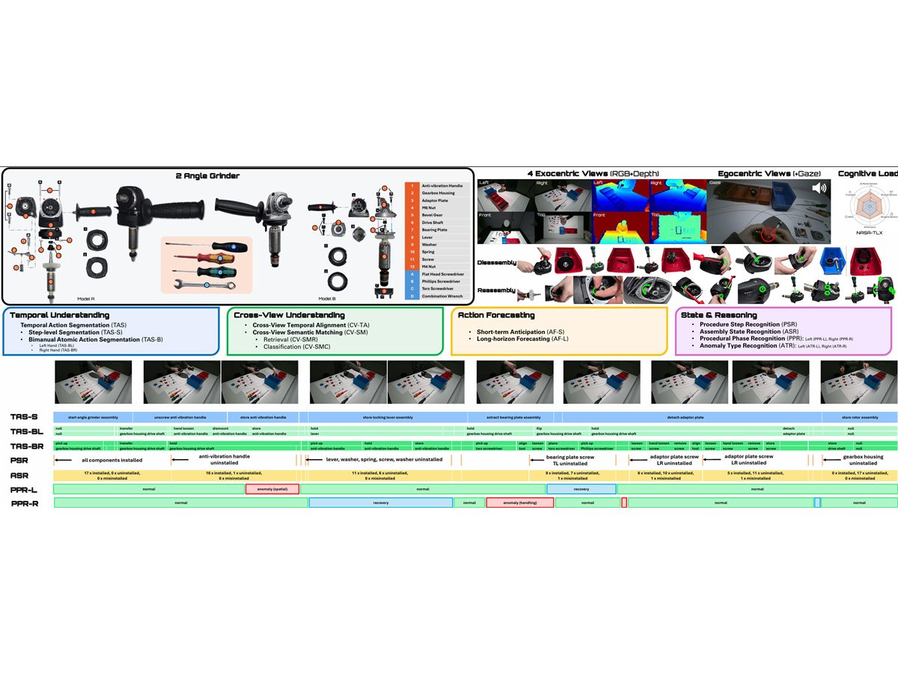
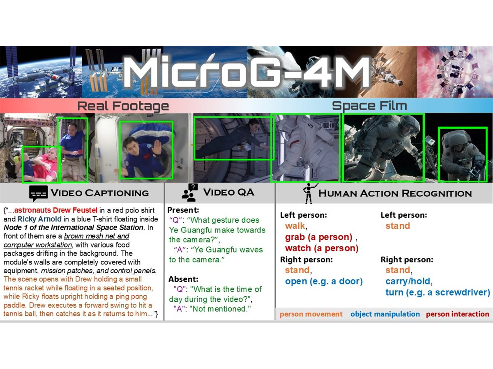
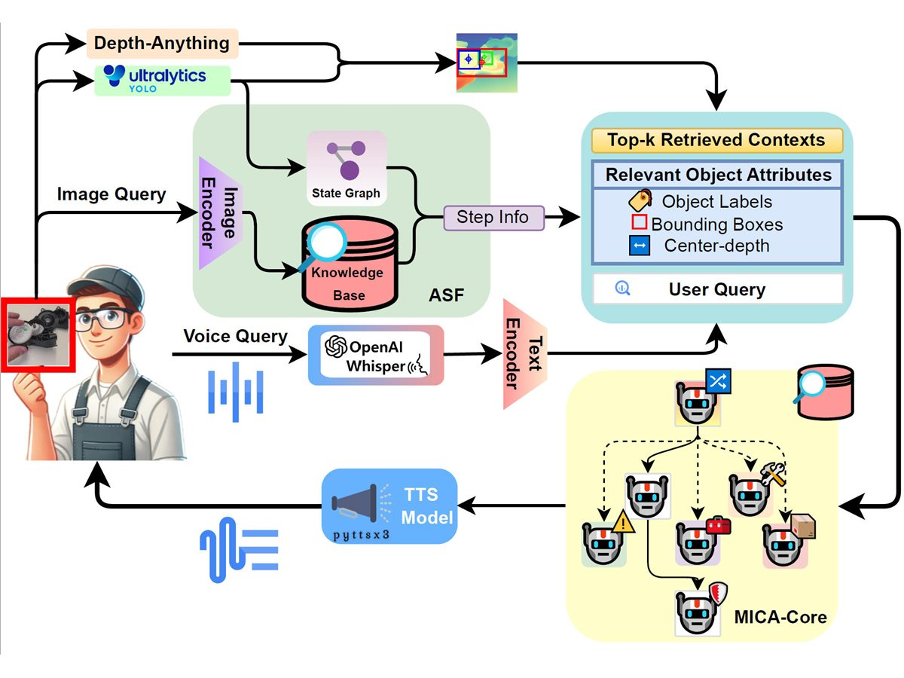
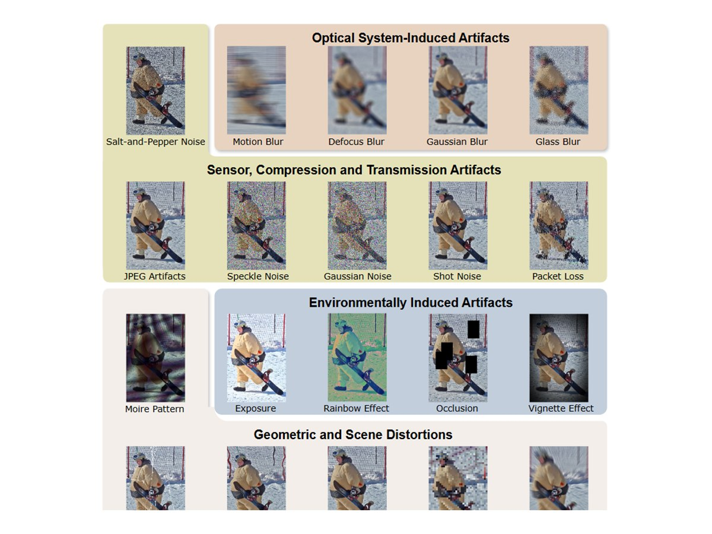
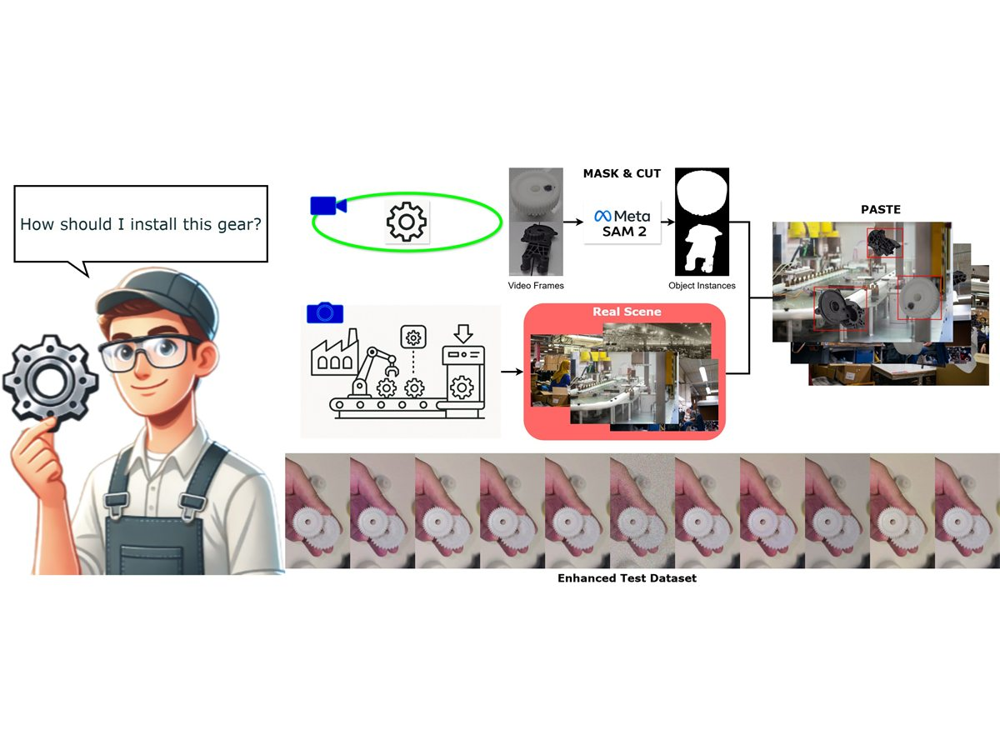
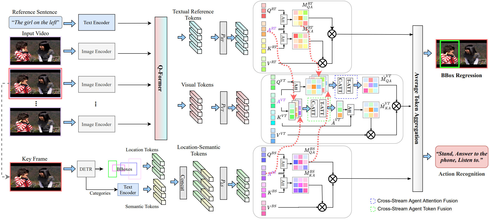

Fine-Grained Human Action Understanding
Temporal segmentation, referring atomic actions, procedural activities, and human-object interaction in complex video.
Ph.D. Student · Computer Vision · Multimodal Learning
My work develops computer vision methods for human-centric video understanding, focusing on fine-grained action recognition, human-object interaction, and robust learning from imperfect supervision and domain shifts.
I am a Ph.D. student in the CV:HCI Lab at Karlsruhe Institute of Technology, supervised by Prof. Rainer Stiefelhagen. Since April 2024, my research has focused on video-based human perception for fine-grained action understanding, human-object interaction, and robust multimodal learning under noisy labels, limited supervision, and open-world conditions. My work is aligned with SFB 1574-B04's focus on human perception for circular factory environments, and I am open to research collaborations, student projects, and thesis supervision.
Updates
Focus
Temporal segmentation, referring atomic actions, procedural activities, and human-object interaction in complex video.
Reliable learning under noisy labels, uncertainty, limited supervision, domain shift, and unknown situations.
Data, benchmarks, and multimodal perception methods for circular factories, wearable assistants, robotics, and unusual environments.
Ongoing
Developing recognition and segmentation methods that remain reliable under label noise, limited annotations, and domain shift.
Studying how visual models handle unknown actions, objects, and human-object interactions beyond closed benchmark assumptions.
Building datasets and evaluation protocols for procedural activities in factories, wearable settings, and microgravity scenes.
Selected Work

arXiv 2026
A multi-granularity industrial assembly dataset for procedural action understanding across videos, annotations, and benchmark tasks.

ICLR 2026
A benchmark direction for human action and scene understanding in microgravity environments.

ICRA 2026
A multi-agent assistant for industrial coordination, combining perception, recognition, and interactive reasoning.

arXiv 2025
A robustness benchmark for evaluating human-object interaction detection under realistic shifts.

SMC 2025
A wearable industrial assistant pipeline for visual data capture, segmentation, and deployment.

ECCV 2024
A fine-grained video action recognition task centered on referring to atomic actions in video.
Resources
Dataset
Multi-view procedural action understanding dataset for industrial assembly.
Benchmark
Robustness benchmark for human-object interaction detection.
Assistant
Multi-agent industrial coordination assistant for recognition and interactive reasoning.
Pipeline
Visual data and detection pipeline for wearable industrial assistants.
Contact
I am open to research collaborations, student projects, and thesis supervision on robust video understanding, human-object interaction, multimodal datasets, and real-world assistive perception.